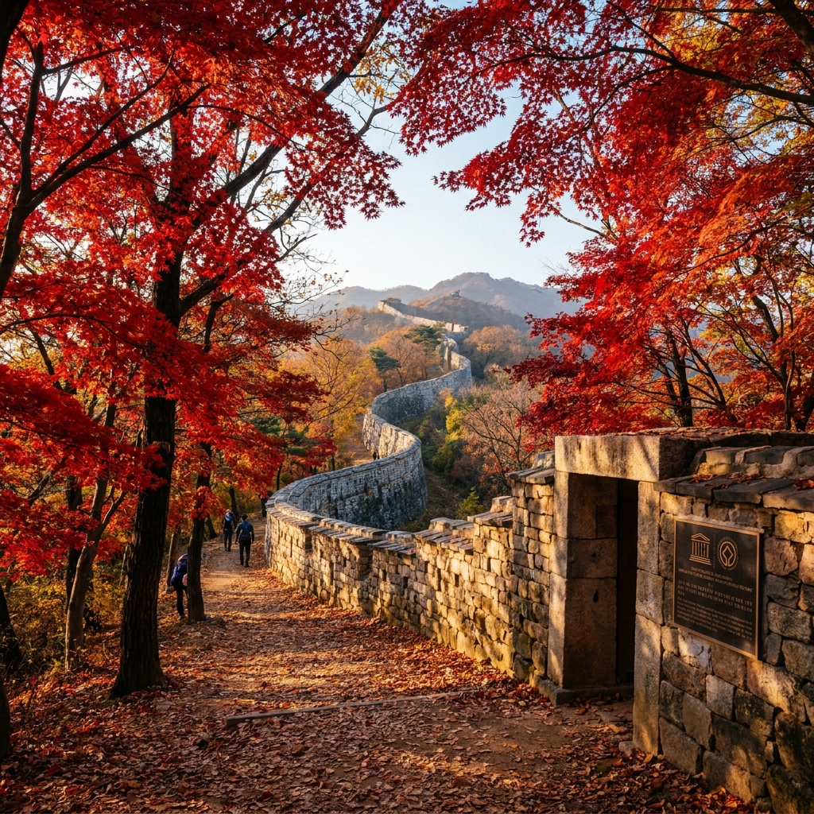
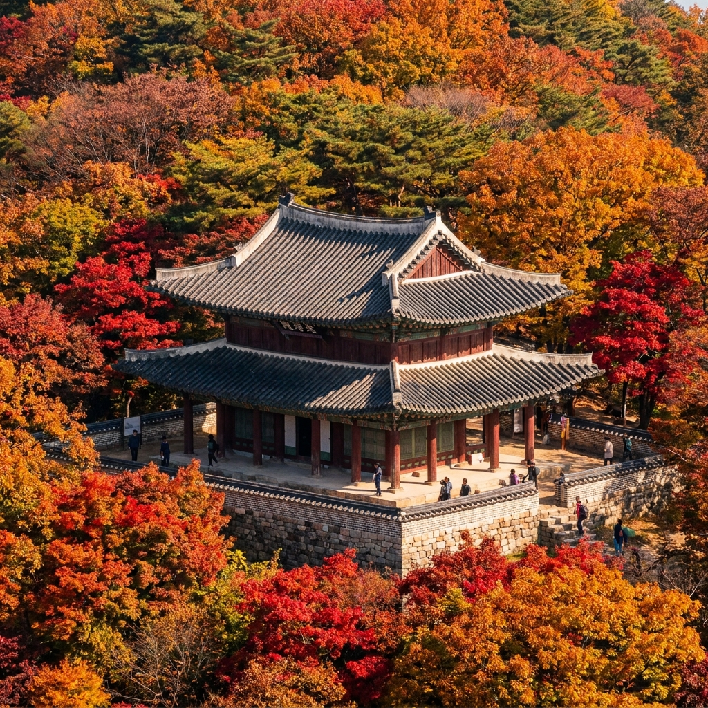
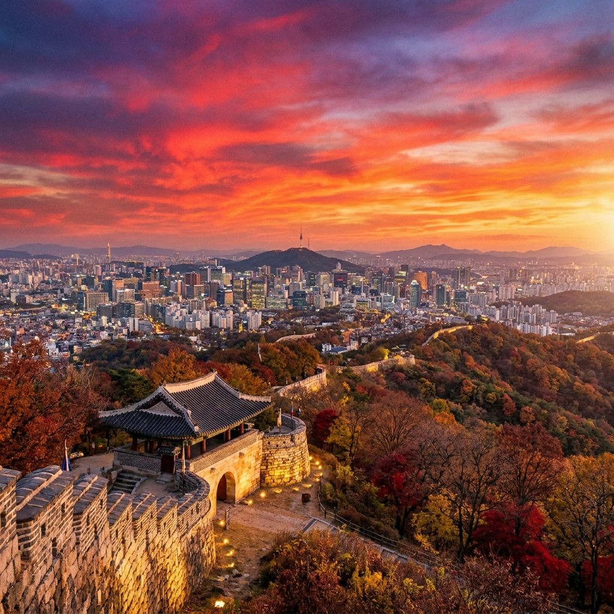

남한산성 가을 단풍 둘레길 1코스 트레킹 — 주차장 위치별 요금 비교와 소요시간 체크리스트
서울 근교에서 천년 역사의 웅장한 석성(石城)과 붉게 타오르는 오색 단풍을 한눈에 조망할 수 있는 유네스코 세계문화유산 남한산성도립공원은 가을철 수도권 최고의 당일치기 트레킹 명소입니다. 남한산성은 입장료가 전면 무료로 운영되며, 성곽길을 따라 완만하게 이어지는 대표 탐방로인 1코스(장수길)는 산성로터리를 기점으로 북문·서문·수어장대·남문을 거쳐 원점 회귀하는 약 3.8km 구간으로, 초보자도 1시간 20분 안팎이면 편안하게 걸을 수 있습니다.
가을 단풍철에는 주말 주차난이 심각하므로 성내 유료 주차장(평일 3,000원 / 주말 5,000원 정액제)의 만차 시각을 미리 파악하고 하부 무료 환승주차장과 순환 버스(9번·9-1번)를 활용하는 것이 필수입니다.
남한산성 5대 탐방 코스별 소요시간 및 난이도 비교표, 청량산 정상 수어장대에서 내려다보는 서울 도심 파노라마 조망 포인트, 그리고 산성마을의 따뜻한 먹거리와 필수 준비물 체크리스트를 상세히 정리해 드립니다.

붉은 가을 단풍과 어우러져 굽이치는 남한산성 성곽길의 장엄한 전경 / AI 제작 이미지
01 | 유네스코 세계유산 남한산성에서 맞이하는 수도권 최고의 가을 단풍
경기도 광주시, 성남시, 하남시에 걸쳐 솟아 있는 남한산성은 해발 497m의 청량산을 중심으로 축조된 조선 시대의 호국 산성입니다.
2014년 유네스코 세계문화유산으로 등재된 이후 역사적 가치와 빼어난 자연경관이 전 세계적으로 인정받았으며, 가을이면 성곽 주변을 빽빽하게 채우는 활엽수림이 울긋불긋한 단풍 바다를 이루어 장관을 연출합니다.
서울 강남과 송파, 분당 등 주요 수도권 도심에서 대중교통이나 자차로 30분에서 1시간 이내에 진입할 수 있어 접근성이 매우 뛰어납니다.
자연 지세를 그대로 살려 쌓아 올린 유려한 곡선의 돌담 성곽길을 따라 걸으며 산들바람에 흩날리는 낙엽을 밟는 산책은 바쁜 일상에 완벽한 재충전을 선사합니다.
02 | 초보자와 가족 단위 산책객을 위한 대표 1코스(산성로터리~수어장대) 안내
남한산성에는 총 5개의 공식 탐방 코스가 정비되어 있으며, 그중 방문객의 70% 이상이 선택하는 가장 대중적인 경로는 바로 1코스(장수길)입니다.
1코스는 산성 중심지인 '산성로터리'에서 출발하여 북문(전승문)을 지나 서문(우익문)으로 완만하게 오른 뒤, 정상의 수어장대와 영춘정을 거쳐 남문(지화문)을 통해 다시 로터리로 내려오는 총 길이 3.8km, 소요시간 약 1시간 20분의 원점 회귀 순환 코스입니다.
포장도로와 정비된 돌계단, 흙길이 적절히 조화를 이루고 있어 가벼운 트레킹화나 편안한 운동화만 갖추면 어린이나 고령의 부모님도 무리 없이 완주할 수 있습니다.
경사가 비교적 완만하고 성곽 외벽을 따라 펼쳐지는 전망이 뛰어나 가을 단풍의 절정을 가장 알차게 사진에 담을 수 있는 최적의 루트입니다.
03 | 남한산성 5대 탐방 코스별 난이도·거리·소요시간 비교표
등산 숙련도와 체력, 체류 시간에 따라 알맞은 코스를 선택할 수 있도록 남한산성의 5대 탐방로 스펙을 비교해 드립니다.
| 코스명 |
주요 경유지 |
총 거리 |
소요 시간 |
난이도 및 추천 대상 |
| 1코스 (추천) |
산성로터리 → 북문 → 서문 → 수어장대 → 영춘정 → 남문 → 로터리 |
3.8 km |
약 1시간 20분 |
초급 / 가족 나들이, 초보자, 단풍 대표 명소 |
| 2코스 |
산성로터리 → 영월정 → 숭열전 → 수어장대 → 서문 → 국청사 → 로터리 |
2.9 km |
약 1시간 00분 |
초급 / 짧고 알찬 역사 유적 탐방 코스 |
| 3코스 |
남한산성세계유산센터 → 현절사 → 벌봉 → 장경사 → 망월사 → 지수당 |
5.7 km |
약 2시간 00분 |
중급 / 호젓한 사찰 숲길과 깊은 숲 단풍 감상 |
| 4코스 |
산성로터리 → 남문 → 남장대터 → 동문 → 지수당 → 개원사 → 로터리 |
3.8 km |
약 1시간 20분 |
중급 / 남쪽 성벽과 계곡 숲길의 정취 |
| 5코스 (완주) |
남한산성세계유산센터 → 동문 → 동장대터 → 북문 → 서문 → 수어장대 → 남문 |
7.7 km |
약 3시간 20분 |
상급 / 성곽 본성 전체를 종주하는 본격 산행러 |
처음 방문하시거나 단풍 사진 촬영이 목적이라면 1코스를 기본으로 걷고, 시간이 남는다면 성곽 내부에 복원된 행궁을 추가로 관람하는 동선을 권장합니다.

남한산성 최고 지휘소였던 수어장대의 당당한 누각과 가을 단풍 / AI 제작 이미지
04 | 청량산 정상 수어장대에서 조망하는 잠실 롯데월드타워와 서울 가을 파노라마
1코스의 가장 높은 지점이자 남한산성의 핵심 유적은 경기도 유형문화재 제1호로 지정된 수어장대(守禦將臺)입니다.
산성 안에 있던 5개 장대 중 유일하게 현존하는 2층 목조 누각으로, 조선 인조 2년(1624) 산성 축성 당시 단층으로 건립되었다가 영조 때 2층으로 중건되며 '수어장대'라는 편액을 하사받았습니다.
수어장대 앞마당 전망대에 서면 쾌청한 가을 하늘 아래 잠실 롯데월드타워를 비롯해 서울 강남 도심과 한강 물줄기, 멀리 남산 N서울타워와 북한산 능선까지 한눈에 파노라마처럼 펼쳐집니다.
누각 한편에는 인조의 삼전도 굴욕과 병자호란의 치욕을 잊지 말자는 의미를 담은 '무망루(無忘樓)' 현판이 걸려 있어 역사적 교훈을 되새기게 합니다.
05 | 웅장한 행궁(行宮) 관람 포인트와 가을 정취를 담은 외벽 돌담길
산성로터리 인근에 복원된 남한산성 행궁은 왕이 도성을 벗어나 머물던 임시 궁궐이자, 유사시 종묘와 사직의 신주를 모실 수 있도록 종묘(좌전)를 갖춘 유일한 비상 왕궁이었습니다.
상궐과 하궐, 정침, 좌승당 등으로 정교하게 복원되어 있으며, 궁궐 담장 너머로 노랗게 물든 은행나무와 붉은 감나무가 기와지붕과 아름다운 조화를 이룹니다.
행궁 입장료는 성인 기준 2,000원, 청소년 1,000원(경기도민 및 만 65세 이상, 초등생 무료)으로 매우 저렴합니다.
정갈하게 관리된 잔디마당과 고풍스러운 회랑을 거닐며 전통 의복을 입고 기념사진을 남기기에 훌륭하며, 해설 투어(10:30, 13:30 등)를 신청하면 숨겨진 왕실 이야기를 깊이 있게 이해할 수 있습니다.
06 | 남문(지화문)과 서문(우익문), 북문(전승문) 성곽길 트레킹 팁
남한산성 트레킹의 백미는 성곽의 4대 문을 따라 걷는 여정입니다. 각 문루는 저마다 독특한 역사적 배경과 풍경을 간직하고 있습니다.
남문(지화문)은 4대 문 중 가장 웅장하고 크며, 병자호란 당시 인조가 처음 산성으로 들어왔던 주 출입문입니다. 수령 수백 년 된 아름드리 느티나무들이 문루 앞을 호위하고 있어 웅장함을 더합니다.
서문(우익문)은 경사가 가장 가파른 곳에 위치한 작은 문으로, 인조가 청 태종에게 항복하러 나갈 때 통과했던 비극의 문이자 현재는 서울 일몰과 야경을 촬영하는 최고의 사진 명당입니다.
북문(전승문)은 성곽 보수 공사를 거쳐 말끔한 위용을 되찾았으며, 성벽 밖으로 울창한 단풍 터널이 조성되어 있어 가을철 가장 아름다운 포토존으로 꼽힙니다.

남한산성 서문 전망대에서 조망하는 가을 일몰과 서울 도심 전경 / AI 제작 이미지
07 | 로터리 주차장 vs 남문주차장 vs 산성리 공영주차장 주차 요금 및 혼잡 회피법
가을 단풍 시즌 주말 남한산성은 오전 09시 30분만 넘어도 정상 부근 주차장이 만차에 달하므로 주차 전략이 필수적입니다. 성내 유료 주차장의 요금 체계를 확인하세요.
| 주차장 구분 |
위치 및 주요 접근성 |
평일 요금 (정액제) |
주말·공휴일 요금 (정액제) |
비고 |
| 중앙주차장 / 로터리주차장 |
산성 중심 상가 및 1코스 출발점 인근 |
3,000원 |
5,000원 |
가장 편리하나 주말 09:30 이전 만차 빈번 |
| 남문주차장 |
남문 진입로 초입 |
3,000원 |
5,000원 |
대형 주차 공간, 전기차 충전기 완비 |
| 산성하부 환승주차장 |
산성 올라가는 초입 (광주 방면) |
무료 |
무료 |
하부 주차 후 9번·9-1번 버스 환승 (주말 추천) |
주말 오전 10시 이후 방문하신다면 산성 상부로 차를 끌고 올라가지 마시고, 산 아래 산성하부 무료 주차장에 주차한 후 10~15분 간격으로 운행하는 9번 버스를 타고 로터리로 올라가는 것이 교통 체증을 피하는 최고의 비결입니다.
08 | 트레킹 후 산성마을에서 즐기는 전통 백숙·파전과 순두부 맛집 정보
1코스 트레킹을 마치고 로터리로 내려오면 성내 산성마을에 길게 형성된 백숙·두부 먹거리 촌을 만나게 됩니다.
남한산성은 광주 토종닭과 오리에 황기, 엄나무, 인삼 등 한약재를 듬뿍 넣고 푹 끓여낸 한방 닭백숙(4인 기준 약 65,000원~75,000원)이 대표 향토 음식으로 유명합니다.
가볍게 식사하기를 원하는 도보 여행자에게는 산성마을의 80년 전통 주먹손두부와 몽글몽글한 순두부 정식(1인 11,000원~13,000원), 그리고 노릇노릇하게 부쳐낸 해물파전과 도토리묵 무침을 추천합니다.
등산 후 칼칼해진 목을 축여주는 시원한 지평막걸리 한 잔을 곁들이면 완벽한 가을 식도락이 완성됩니다.
09 | 남한산성 가을 산행 시간대별 추천 일정표와 등산 준비물 체크리스트
여유롭고 안전한 단풍 나들이를 위한 시간대별 최적 동선과 준비물 체크리스트를 제안합니다.
📅 남한산성 가을 당일치기 1코스 추천 일정표
· 09:00 ~ 09:30 : 산성로터리 도착 및 중앙주차장 안전 주차 (혼잡 회피를 위한 조기 도착)
· 09:30 ~ 11:30 : 1코스 트레킹 시작 (로터리 → 북문 단풍터널 → 서문 조망 → 수어장대 휴식 → 남문)
· 11:30 ~ 12:30 : 로터리 복귀 후 남한산성 행궁 내부 관람 및 기념사진 촬영
· 12:30 ~ 14:00 : 산성마을 향토 음식점에서 능이백숙 또는 주먹손두부·도토리묵 점심 식사
· 14:00 ~ 15:30 : 산성 내 전통 카페에서 대추차 한 잔의 여유를 즐긴 후 하산 귀가
💡 가을 남한산성 트레킹 준비물 체크리스트
1. 능선 성곽길은 가을바람이 강해 체온이 떨어질 수 있으니 방풍 재킷이나 가벼운 바람막이를 챙기세요.
2. 성곽 외곽 바위 지대는 미끄러울 수 있으므로 접지력이 좋은 트레킹화나 등산화를 착용하세요.
3. 산성 내 문화재 보호 구역 전역은 취사 및 야영, 흡연이 절대 금지되어 있습니다.
4. 주말 자차 이용 시 오후 하산길 정체가 심하므로 가급적 15시 이전에 출차하시는 것이 수월합니다.
#남한산성
#남한산성둘레길
#남한산성1코스
#남한산성가을단풍
#수어장대
#남한산성행궁
#남한산성주차장요금
#수도권단풍명소
#남한산성백숙
#가을당일치기등산